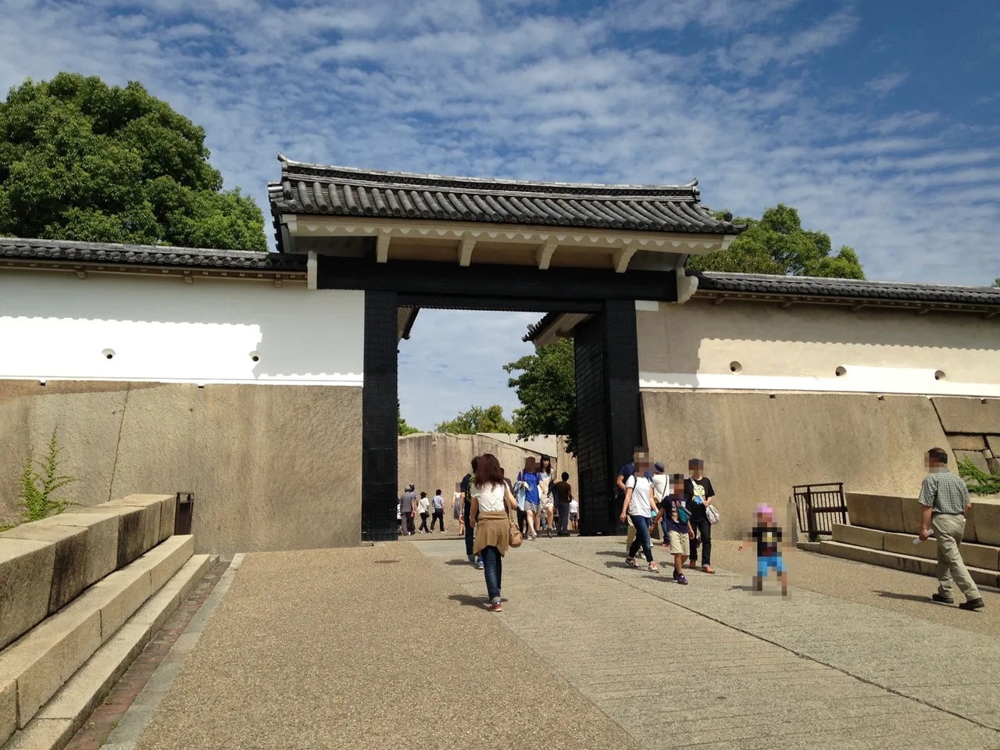

大阪城公園のおすすめ散策は、谷町四丁目駅から大手門をくぐり、桜門で本丸に入って、青屋門からJR大阪城公園駅へ抜ける歩き方です。公園の入場は無料で、門や石垣、天守閣の外観を屋外から見て回れます。2026年11月26日時点の大阪城公園公式ガイドと大阪観光局の案内をもとに、駅と見どころの選び方を紹介します。
01大阪城公園のおすすめは大手門と青屋門をつなぐルート
公式ガイドの「ゴールデンルート」は谷町四丁目駅から大阪城公園駅まで約3kmです。ここではその流れを使い、外から見られる門と石垣を中心に歩きます。谷町四丁目駅を出て大手門へ向かい、桜門から本丸に入ります。本丸で天守閣を外から眺め、帰りは青屋門を目印にして大阪城公園駅へ進みます。
| 歩き方 | 駅と門の組み合わせ | 向いている予定 |
|---|---|---|
| 西から東へ通り抜ける | 谷町四丁目駅 → 大手門 → 桜門 → 青屋門 → 大阪城公園駅 | 門を順に見て、帰りはJRに乗る |
| JR側から本丸を目指す | 大阪城公園駅 → 青屋門 → 極楽橋方面 → 本丸方面 | JRで着いて、堀越しの景色から見たい |
| 大手門周辺で折り返す | 谷町四丁目駅 → 大手門周辺 → 谷町四丁目駅 | 城の入口を見て、来た路線へ戻る |
帰りに乗る路線を先に決めると、同じ道を戻るか、公園を通り抜けるかを選びやすくなります。 約3kmは公式ガイドに載っているコース全体の距離です。上の折り返しルートなどにそのまま当てはめず、歩き出す前に公式ガイドの園内図で次の門を探しておきましょう。
02大手門と桜門では石垣の見え方を比べる
大手門は谷町四丁目駅側から入るときの目印です。門の手前でいったん足を止め、屋根だけでなく門の脇の石垣まで視線を広げると、入口全体の形が分かります。同行者と時間の使い方が違うときは、通り道を避けて待ち合わせ場所を決めてから見学すると合流しやすくなります。

次は本丸の正面入口にあたる桜門へ進みます。公式ガイドでは、近くの大きな石を「蛸石」として紹介しています。門の屋根を見上げるだけでなく、入口周辺で石の表面にも目を向けてみてください。建物の見学時間が取れない日も、大手門、桜門、蛸石を目印にすると屋外だけで行程を組めます。

写真の原版と利用条件は、大手門（CC BY-SA 3.0）と桜門（CC BY-SA 4.0）で確認できます。掲載用に縮小しています。


03大阪城公園駅から歩くなら極楽橋を目印に
JRで到着する人は、大阪城公園駅からジョー・テラス・オオサカを目印に青屋門方面へ進むと、通り抜けコースを東側からたどれます。極楽橋は、内堀の向こうに天守閣を眺められる場所として公式ガイドに載っています。帰りもJRなら、橋からの景色を見て来た道を戻る行程にすると、帰りの道順を覚えやすくなります。谷町四丁目方面へ抜けるなら、本丸側へ足を延ばして大手門へ向かいます。
ポイント天守閣を堀と一緒に見たい人は、青屋門側から歩いて極楽橋を最初の目標にすると予定を立てやすくなります。
04大阪城公園は何時まで入れる？
大阪観光局は公園を常時開園、入場無料と案内しています。この記事の散策範囲では入場券を買わずに歩けます。 園内の施設には別に利用料や休館日が設定される場合があります。城内見学もしたい日は、屋外を歩く時間とは別に施設の案内を見て予定を組んでください。
近畿で広い園内を目的別に歩くなら、駅の選び方をまとめた京都御苑の散策コースも参考になります。大阪城公園では、見たい門と帰りの駅をセットで決めると歩く方向を選べます。
05よくある質問
大阪城公園駅から大阪城に歩いて行けますか？
JR大阪城公園駅から青屋門方面へ入り、本丸方面へ歩けます。内堀と天守閣を一緒に見たい場合は極楽橋を目印にします。
大阪城公園はいくらで入れますか？
公園の入場は無料です。園内の施設に入る場合は、施設ごとの料金を確認してください。
大阪城公園のおすすめスポットはどこですか？
門と石垣なら大手門と桜門、堀越しに天守閣を見たいなら極楽橋が向いています。
06まとめ
- 谷町四丁目駅から大手門、桜門を歩き、青屋門経由で大阪城公園駅へ抜けられます。
- JR側から出発する場合は、青屋門と極楽橋を目印にすると堀越しの眺めから楽しめます。